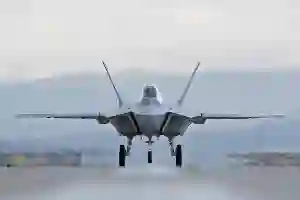
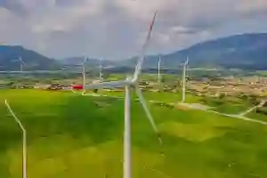
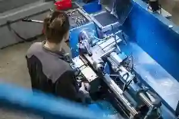
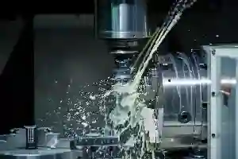
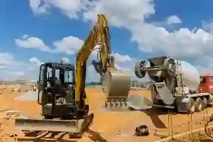

Sektörlere Özel CNC ve Talaşlı İmalat Çözümleri
Günümüz endüstriyel üretim dünyasında her sektörün beklentileri, tolerans değerleri ve kalite standartları birbirinden farklıdır. Aymaksan Makina, bu farkındalıkla geliştirdiği sektörlere özel cnc talaşlı imalat yaklaşımı sayesinde yalnızca parça üretimi değil, aynı zamanda süreç optimizasyonu ve mühendislik desteği sunar.
Savunma sanayinden otomotive, medikal uygulamalardan enerji sistemlerine kadar uzanan geniş üretim yelpazesinde sektörel cnc üretim çözümleri, proje bazlı ihtiyaçlara göre planlanır ve uygulanır. Bu yaklaşım, yüksek hassasiyet gerektiren üretimlerde sürdürülebilir kaliteyi mümkün kılar.
Aymaksan’ın üretim modeli; teknik resim analizi, malzeme seçimi, proses planlama ve kalite kontrol aşamalarını kapsayan bütüncül bir yapıya sahiptir. Böylece her sektör için farklılaştırılmış üretim senaryoları başarıyla hayata geçirilir.
Aymaksan Makine Sektörler

Savunma Sanayi
Otomotiv ve Elektrikli Araçlar

Enerji ve Yenilenebilir Sistemler

Medikal ve Biyomekanik

Makine ve Endüstri

Tarım ve İnşaat Ekipmanları
Savunma Sanayinde CNC ve Talaşlı İmalat Yetkinliği
Savunma sanayi, sıfır hata toleransı ve yüksek güvenilirlik gereksinimleri ile öne çıkan bir alandır. Aymaksan, savunma sanayi cnc imalat süreçlerinde uluslararası standartlara uygun üretim altyapısı ile hareket eder. Yüksek mukavemetli çelikler, özel alaşımlar ve hassas toleranslar gerektiren parçalar, ileri CNC teknolojileri ile işlenir. Bu alanda sunulan sektörlere özel cnc talaşlı imalat çözümleri; askeri ekipman alt bileşenleri, mekanik bağlantı elemanları ve fonksiyonel sistem parçalarını kapsar. Proses boyunca izlenebilirlik, ölçülebilir kalite ve dokümantasyon ön planda tutulur.
Savunma sanayi, yüksek hassasiyet, güvenilirlik ve izlenebilirlik gerektiren üretim süreçleriyle öne çıkar. Bu alanda uygulanan savunma sanayi cnc imalat çözümleri, dar toleranslar ve yüksek mukavemetli malzemelerle gerçekleştirilir. Aymaksan, savunma projelerinde edindiği tecrübe ile kalite kontrol ve proses güvenliğini ön planda tutarak sektör beklentilerine uyumlu üretim gerçekleştirir.
Otomotiv ve Elektrikli Araç Sektörüne Özel CNC Üretim
Otomotiv sektöründe seri üretim kabiliyeti kadar, elektrikli araçlar ile birlikte artan hassasiyet ihtiyacı da kritik hale gelmiştir. Aymaksan, otomotiv cnc parça üretimi kapsamında motor bileşenleri, aktarma organları ve özel bağlantı elemanlarını yüksek tekrar edilebilirlik ile üretir.
Elektrikli araç teknolojilerinde kullanılan hafif ve dayanıklı parçalar için sektörel cnc üretim çözümleri, malzeme optimizasyonu ve hassas yüzey kalitesi ile desteklenir. Bu yaklaşım, performans ve uzun ömürlü kullanım açısından avantaj sağlar.
Otomotiv ve elektrikli araç sektöründe üretim, seri imalat kabiliyeti kadar hassasiyet de gerektirir. Otomotiv cnc parça üretimi, motor bileşenleri ve mekanik sistemlerde yüksek tekrar edilebilirlik sağlar. Elektrikli araçlara yönelik projelerde ise hafiflik ve dayanıklılık dengesi ön plana çıkar. Bu yaklaşım, performans odaklı ve uzun ömürlü parça üretimini destekler.
Elektrikli Araç Bileşenlerinde Hassas ve Sürdürülebilir CNC Üretim Yaklaşımı
Elektrikli araç teknolojilerinin gelişmesiyle birlikte, üretimde hassasiyet ve sürdürülebilirlik kavramları daha da önem kazanmıştır. Batarya sistemleri, güç aktarım bileşenleri ve hafifletilmiş mekanik parçalar, yüksek tolerans hassasiyeti gerektirir. Bu noktada uygulanan sektörlere özel cnc talaşlı imalat yaklaşımı, elektrikli araç projelerinde performans ve güvenilirlik hedeflerini destekler. Üretim süreçlerinde kullanılan malzemelerin doğru işlenmesi, enerji verimliliği ve uzun ömürlü kullanım açısından kritik bir rol oynar.
Elektrikli araçlara yönelik sektörel cnc üretim çözümleri, klasik otomotiv üretiminden farklı olarak daha sıkı kalite kontrol ve proses optimizasyonu gerektirir. Aymaksan’ın üretim yaklaşımı, bu gereksinimleri dikkate alarak ölçü stabilitesi yüksek ve tekrar edilebilir parça üretimini mümkün kılar. Böylece otomotiv sektöründeki dönüşüm sürecine uyumlu, sürdürülebilir ve mühendislik temelli bir üretim altyapısı oluşturulur.
Sektörünüze Özel Üretimi Keşfedin
Enerji ve Yenilenebilir Sistemler İçin CNC İmalat Çözümleri
Enerji sektörü, uzun ömürlü kullanım, çevresel dayanıklılık ve yüksek verimlilik beklentileriyle üretim disiplininde özel bir yaklaşım gerektirir. Aymaksan, enerji altyapılarında kullanılan mekanik bileşenler için enerji sektörü talaşlı imalat odaklı üretim planları geliştirir. Bu kapsamda rüzgâr, güneş ve diğer yenilenebilir sistemlerde kullanılan özel parçalar, hassas toleranslarla CNC tezgâhlarında işlenir. Yenilenebilir enerji projelerinde, malzeme seçimi ve yüzey kalitesi sistem performansını doğrudan etkiler. Bu nedenle sektörlere özel cnc talaşlı imalat yaklaşımı; korozyon direnci yüksek alaşımlar, stabil ölçü toleransları ve proses güvenilirliği üzerine inşa edilir. Aymaksan’ın üretim modeli, saha koşullarına uygun, uzun ömürlü parça çözümleri sunmayı hedefler.
Enerji sektöründe kullanılan parçalar, uzun süreli ve zorlu çalışma koşullarına dayanıklı olmalıdır. Enerji sektörü talaşlı imalat süreçleri, rüzgâr ve güneş enerjisi sistemlerinde kullanılan mekanik bileşenlerin güvenilirliğini artırır. Üretimde malzeme seçimi ve yüzey kalitesi, sistem verimliliğini doğrudan etkileyen kritik unsurlar arasında yer alır. Üretim süreçlerinde enerji sektörüne yönelik sürdürülebilir üretim planlarken, yenilenebilir enerji politikaları ve planlamaları ile uyumlu parçaların tasarlanması ve imal edilmesi kritik öneme sahiptir.
KOBİ’lerin enerji maliyetlerini optimize etmeye yönelik KOBİ Enerji Verimliliği Destek Programı, sürdürülebilir üretim planlamasında fayda sağlayan resmi bir destek mekanizmasıdır. Sanayi üretiminde yenilikçi ve çevresel odaklı yaklaşımlar kapsamında, TÜBİTAK tarafından yürütülen Türkiye Yeşil Sanayi Projesi gibi programlar yenilikçi imalat süreçlerini desteklemektedir.
Medikal ve Biyomekanik Üretimde Hassas CNC İşleme
Medikal sektör, üretim hassasiyetinin en yüksek seviyede olması gereken alanlardan biridir. Aymaksan, medikal cihaz ve biyomekanik sistemler için medikal parça cnc işleme çözümleri sunarken, ölçü doğruluğu ve yüzey kalitesi kriterlerini merkezine alır. Üretim süreçleri, hijyenik kullanım ve fonksiyonel güvenilirlik prensiplerine göre şekillendirilir.
Bu alanda uygulanan sektörel cnc üretim çözümleri, düşük toleranslı parçalar, özel aparat bileşenleri ve prototip üretimleri kapsar. Üretimin her aşamasında kalite kontrol süreçleri devreye alınarak, seri ve özel üretim taleplerine uyum sağlanır. Aymaksan, medikal üretimde sürdürülebilir kaliteyi, disiplinli proses yönetimi ile destekler.
Medikal uygulamalarda ölçü doğruluğu ve yüzey kalitesi hayati önem taşır. Medikal parça cnc işleme süreçleri, fonksiyonel güvenilirlik ve kullanım güvenliği esas alınarak yürütülür. Biyomekanik sistemlere yönelik üretimlerde, hassas toleranslar ve kontrollü proses yönetimi sayesinde yüksek kalite standartları sürdürülebilir hale getirilir.
Medikal Sektörde Özel Parça ve Prototip Üretim Yaklaşımı
Medikal uygulamalarda prototip üretimi, ürün geliştirme sürecinin kritik bir parçasıdır. Aymaksan, bu aşamada sektörlere özel cnc talaşlı imalat yetkinliğini kullanarak fonksiyonel testlere uygun parçalar üretir. Böylece ürün doğrulama süreci hızlanır ve seri üretime geçiş daha kontrollü bir yapıda gerçekleşir.
Medikal ürün geliştirme süreçlerinde prototip üretimi kritik bir aşamadır. Bu süreçte uygulanan sektörel cnc üretim çözümleri, fonksiyonel testlere uygun ve revizyona açık parçalar üretilmesini sağlar. Prototip aşamasında elde edilen veriler, seri üretime geçiş sürecini hızlandırır ve ürün güvenilirliğini artırır.
Makine ve Endüstri Üretiminde CNC Tabanlı Çözümler
Endüstriyel makine üretimi, farklı alt sistemlerin bir araya geldiği karmaşık bir mühendislik sürecidir. Aymaksan, bu alanda endüstriyel makine imalat çözümleri kapsamında dişli sistemleri, taşıyıcı elemanlar ve özel mekanik parçalar üretir. CNC tabanlı üretim altyapısı, yüksek tekrar edilebilirlik ve ölçü stabilitesi sağlar.
Makine ve endüstri projelerinde kullanılan sektörel cnc üretim çözümleri, özel tolerans gereksinimlerine göre planlanır. Bu yaklaşım, uzun vadeli performans ve bakım kolaylığı açısından önemli avantajlar sunar.
Endüstriyel makineler, farklı mekanik sistemlerin bir araya gelmesiyle oluşur. Endüstriyel makine imalat çözümleri, dişli sistemleri ve taşıyıcı bileşenlerde yüksek ölçü stabilitesi gerektirir. CNC tabanlı üretim altyapısı, uzun süreli kullanım ve bakım kolaylığı sağlayan parçaların üretilmesine olanak tanır.
Projeniz İçin Doğru Sektörel Çözümü Belirleyin
Tarım ve İnşaat Makineleri İçin Özel Talaşlı İmalat Hizmetleri
Tarım ve inşaat makineleri, zorlu saha koşullarında kesintisiz çalışması gereken sistemlerden oluşur. Bu nedenle bu sektörlerde kullanılan mekanik parçalar; darbe dayanımı, aşınma direnci ve uzun ömür kriterlerine göre üretilmelidir. Aymaksan, bu ihtiyaçlara yönelik olarak tarım ve inşaat makineleri cnc imalat çözümleri geliştirir.
Bu alanda sunulan sektörlere özel cnc talaşlı imalat yaklaşımı; şasi bağlantı elemanları, hareketli mekanizma parçaları ve özel ölçülü bileşenleri kapsar. Üretim süreçleri, ağır çalışma koşullarına uygun malzeme seçimi ve tolerans kontrolü ile desteklenir. Böylece tarım ve inşaat makinelerinde güvenilir performans elde edilir.
Tarım ve inşaat makineleri, ağır saha koşullarında çalışacak şekilde tasarlanır. Tarım ve inşaat makineleri cnc imalat süreçleri, darbe ve aşınma dayanımı yüksek parçaların üretilmesini hedefler. Bu alandaki üretimler, uzun ömürlü kullanım ve operasyonel güvenilirlik açısından önemli avantajlar sunar.
Ağır Hizmet Koşulları İçin Dayanıklı CNC Parça Üretimi
Tarım ve inşaat sektörlerinde kullanılan parçalar, çoğu zaman dış etkenlere doğrudan maruz kalır. Aymaksan, bu doğrultuda sektörel cnc üretim çözümleri kapsamında yüksek mukavemetli çelikler ve özel alaşımlar ile üretim gerçekleştirir. Bu yaklaşım, parçaların saha koşullarında uzun süre stabil çalışmasını sağlar.
Ağır hizmet koşullarında kullanılan parçalar, yüksek mekanik yüklere maruz kalır. Bu nedenle üretimde dayanıklı malzemeler ve kontrollü işleme teknikleri tercih edilir. CNC tabanlı süreçler, parça mukavemetini artırırken ölçü tutarlılığını da korur ve zorlu çalışma ortamlarına uygun çözümler sunar.
Sektörler Arası Üretim Esnekliği ve Entegre Yaklaşım
Her sektörün kendine özgü gereksinimleri olsa da, üretim altyapısının esnekliği kritik bir avantajdır. Aymaksan, farklı sektörlerden gelen talepleri tek bir entegre üretim yapısı altında yöneterek sektörlere özel cnc talaşlı imalat kabiliyetini güçlendirir. Bu yapı, proje bazlı üretimlerde zaman ve maliyet avantajı sağlar.
Sektörler arası geçişkenlik; savunma, otomotiv, enerji ve medikal gibi alanlarda edinilen üretim deneyiminin, farklı projelere aktarılmasına olanak tanır. Böylece sektörel cnc üretim çözümleri, yalnızca belirli bir alanla sınırlı kalmadan sürekli gelişen bir üretim standardına dönüşür.
Farklı sektörlere hizmet verebilmek, üretim altyapısında esneklik gerektirir. Sektörlere özel cnc talaşlı imalat yaklaşımı, proje bazlı taleplerin tek bir entegre yapı altında yönetilmesini mümkün kılar. Bu yapı, farklı sektörlerden edinilen deneyimin üretim kalitesine yansımasını sağlar. Türkiye’de imalat sanayi ekosisteminin güçlendirilmesinde KOSGEB’nin destek programları önemli rol oynar ve bu destekler, üretim süreçlerinin yenilenebilir teknoloji ve verimlilik odaklı dönüşümünü besler.
Proje Bazlı CNC Üretim Planlama Süreçleri
Proje bazlı üretimlerde her detay önemlidir. Aymaksan, teknik çizimden üretim sonrası kalite kontrol aşamasına kadar tüm süreci sistematik biçimde yönetir. Bu süreçte sektörlere özel cnc talaşlı imalat yaklaşımı, her projenin gereksinimlerine göre yeniden yapılandırılır.
Proje bazlı üretimlerde her detay önceden planlanmalıdır. CNC üretim planlaması; teknik çizim analizi, malzeme seçimi ve proses sıralamasını kapsar. Bu sistematik yaklaşım, termin sürelerinin korunmasına ve üretim sürecinde revizyon ihtiyacının azaltılmasına katkı sağlar.
Kalite, İzlenebilirlik ve Süreç Güvencesi
Sektörel üretimde sürdürülebilir kalite, yalnızca makine parkuru ile değil, süreç yönetimi ile mümkündür. Aymaksan, tüm sektörlere yönelik üretimlerinde kalite kontrol, ölçüm ve dokümantasyon süreçlerini standartlaştırır. Bu yapı, sektörel cnc üretim çözümleri için güvenilir bir temel oluşturur.
Her üretim adımı kayıt altına alınarak izlenebilirlik sağlanır. Bu yaklaşım, savunma ve medikal gibi hassas sektörlerde kritik bir gereklilik olarak öne çıkar ve sektörlere özel cnc talaşlı imalat anlayışının ayrılmaz bir parçasıdır.
Üretimde sürdürülebilir kalite, izlenebilir süreçlerle mümkündür. Ölçüm, kontrol ve dokümantasyon adımları sayesinde her parça kayıt altına alınır. Bu yapı, özellikle hassas sektörlerde kalite sürekliliğini garanti altına alarak güvenilir üretim ortamı oluşturur. Üretim kalite standartlarının sürdürülebilirliği için Türk Standardları Enstitüsü (TSE) tarafından oluşturulan standartlara uyum kritik bir rol oynar.
Zorlu Sektörler İçin Güçlü Üretim Altyapısı
Sektörel Mühendislik Desteği ve Teknik Danışmanlık
Sektörel üretimde başarı, yalnızca CNC tezgâh kapasitesiyle değil; doğru mühendislik yaklaşımıyla sağlanır. Aymaksan, her projeye başlamadan önce teknik çizim analizi, tolerans değerlendirmesi ve malzeme uygunluğu çalışmalarını kapsayan mühendislik desteği sunar. Bu yaklaşım, sektörlere özel cnc talaşlı imalat süreçlerinin en verimli şekilde planlanmasını sağlar.
Savunma, otomotiv, enerji ve medikal gibi alanlarda edinilen deneyim, sektörel cnc üretim çözümleri için referans niteliği taşır. Proje sürecinin erken aşamasında yapılan teknik değerlendirmeler, üretim sırasında oluşabilecek revizyon ihtiyacını minimize eder ve zaman kayıplarını önler.
Üretim sürecinin başarısı, doğru mühendislik desteğiyle doğrudan ilişkilidir. Sektörel mühendislik yaklaşımı, proje gereksinimlerinin doğru analiz edilmesini sağlar. Bu sayede üretim öncesinde olası riskler öngörülür ve süreç daha verimli hale getirilir.
Teknik Çizimden Üretime Geçiş Süreci
Her sektörün teknik çizim standartları ve tolerans beklentileri farklıdır. Aymaksan, bu farklılıkları dikkate alarak üretim öncesi detaylı bir planlama süreci yürütür. Bu süreçte sektörlere özel cnc talaşlı imalat yaklaşımı, çizim revizyonları ve üretim senaryoları ile desteklenir.
Teknik çizimlerin doğru yorumlanması, üretim kalitesinin temelini oluşturur. CNC üretime geçiş sürecinde toleranslar, yüzey gereksinimleri ve malzeme detayları titizlikle değerlendirilir. Bu aşama, nihai ürün performansını doğrudan etkileyen kritik bir adımdır.
Sektörel Üretimde Süreç Optimizasyonu ve Verimlilik
Üretim verimliliği, doğru proses yönetimi ile doğrudan ilişkilidir. Aymaksan, sektör bazlı üretim planlamasında makine parkı, takım seçimi ve işleme sıralamasını optimize ederek sektörel cnc üretim çözümleri sunar. Bu yapı, hem seri üretim hem de özel parça imalatında sürdürülebilir kalite sağlar.
Özellikle çok parçalı ve karmaşık projelerde, sektörlere özel cnc talaşlı imalat sürecinin doğru kurgulanması; maliyet kontrolü ve termin süreleri açısından kritik avantajlar yaratır. Aymaksan’ın entegre üretim modeli, bu avantajı sistematik hale getirir.
Süreç optimizasyonu, üretim maliyetlerini düşürürken kaliteyi artırır. CNC tabanlı üretimde doğru takım seçimi ve işleme sıralaması, verimlilik üzerinde belirleyici rol oynar. Bu yaklaşım, farklı sektörlere yönelik üretimlerde sürdürülebilir performans sağlar.
Mühendislikten Üretime Tek Noktadan Çözüm
Sektörel Üretimde Uzmanlık, Deneyim ve Süreklilik Yaklaşımı
Sektörel üretimde kalıcı başarı, yalnızca teknik altyapı ile değil; uzun vadeli uzmanlık ve süreklilik anlayışıyla mümkündür. Aymaksan, farklı endüstrilerde edindiği tecrübeyi sektörlere özel cnc talaşlı imalat yaklaşımıyla birleştirerek her projeye özel üretim stratejileri geliştirir. Savunma, otomotiv, enerji ve medikal gibi alanlarda değişen tolerans ve kalite beklentileri, bu uzmanlık çerçevesinde ele alınır. Böylece üretim süreçleri, sektör dinamiklerine uyumlu şekilde yönetilir.
Her sektör, farklı mühendislik problemleri ve uygulama senaryoları barındırır. Bu nedenle sektörel cnc üretim çözümleri, standart bir üretim modelinden ziyade proje bazlı değerlendirme gerektirir. Aymaksan, teknik resim analizi ve proses planlamasını sektör gerekliliklerine göre şekillendirerek ölçü doğruluğu ve yüzey kalitesi açısından tutarlılık sağlar. Bu yaklaşım, hem özel parça imalatında hem de seri üretim projelerinde sürdürülebilir kalite elde edilmesine katkı sunar.
Üretimde süreklilik, yalnızca ilk teslimatla sınırlı değildir. Aymaksan’ın benimsediği üretim anlayışı, tekrar eden siparişlerde aynı kalite seviyesini korumayı hedefler. Bu yapı, sektörlere özel cnc talaşlı imalat süreçlerinin zaman içinde daha verimli hale gelmesini sağlar. Süreklilik odaklı bu yaklaşım, uzun vadeli iş birliklerinin temelini oluşturarak müşteriler için güvenilir bir üretim ortamı yaratır.
Entegre Üretim Altyapısı ile Sektör Bazlı Katma Değer
Modern üretim anlayışında entegrasyon, hız ve kalite açısından kritik bir faktördür. Aymaksan, entegre üretim altyapısı sayesinde farklı sektörlerden gelen talepleri tek bir sistem içinde yönetir. Bu yapı, sektörel cnc üretim çözümleri kapsamında zaman kayıplarını azaltırken, üretim adımları arasında uyum sağlar. Böylece karmaşık projelerde dahi kontrol edilebilir ve öngörülebilir bir üretim süreci oluşturulur.
Entegre yapı, mühendislikten kalite kontrole kadar tüm aşamaların birbiriyle bağlantılı çalışmasını mümkün kılar. Özellikle savunma ve medikal gibi hassas alanlarda, süreçler arası kopukluklar ciddi riskler doğurabilir. Aymaksan, bu riskleri minimize etmek amacıyla sektörlere özel cnc talaşlı imalat süreçlerini bütüncül bir bakış açısıyla ele alır. Bu yaklaşım, üretimde izlenebilirliği ve kalite sürekliliğini destekler.
Sektör bazlı katma değer, yalnızca üretilen parçanın kendisiyle sınırlı değildir. Doğru üretim planlaması, malzeme optimizasyonu ve proses verimliliği, projelerin genel başarısını doğrudan etkiler. Aymaksan’ın entegre üretim modeli, bu unsurları bir araya getirerek müşterilere uzun vadede maliyet avantajı ve operasyonel güven sağlar. Bu yapı, sektörel cnc üretim çözümleri için güçlü ve sürdürülebilir bir temel oluşturur.
Sonuç – Sektörlere Özel Üretimde Güvenilir Çözüm Ortağınız
Aymaksan, farklı sektörlerin gereksinimlerini tek bir üretim disiplininde buluşturarak sektörlere özel cnc talaşlı imalat alanında bütüncül bir değer önerisi sunar. Savunma, otomotiv, enerji, medikal, makine-endüstri ile tarım ve inşaat makineleri gibi kritik alanlarda geliştirilen sektörel cnc üretim çözümleri, mühendislik temelli planlama ve disiplinli süreç yönetimi ile desteklenir.
Bu yaklaşım; yüksek hassasiyet, izlenebilir kalite ve sürdürülebilir performans hedeflerini aynı potada birleştirir. Aymaksan’ın entegre üretim modeli, proje bazlı taleplerde esneklik sağlarken; seri üretim gereksinimlerinde de tutarlılık ve hız kazandırır. Sonuç olarak, her sektör için doğru toleranslar, doğru malzemeler ve doğru proseslerle üretilmiş güvenilir parçalar ortaya çıkar.
Aymaksan, farklı sektörlerin ihtiyaçlarını tek bir üretim disiplini altında birleştirerek sektörlere özel cnc talaşlı imalat alanında güvenilir çözümler sunar. Mühendislik temelli yaklaşım, disiplinli süreç yönetimi ve kalite odaklı üretim anlayışıyla uzun vadeli iş ortaklıkları için güçlü bir temel oluşturur.